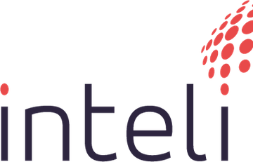
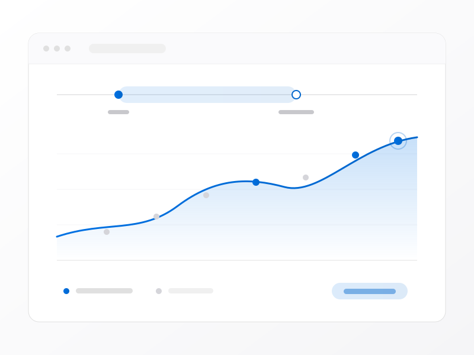

Safira

Projeto acadêmico do Inteli com a Azul Linhas Aéreas
Sobre o projeto
Modelo preditivo de detratores de NPS desenvolvido com a Azul Linhas Aéreas, no Módulo 3 do Inteli. Hoje a companhia só descobre a insatisfação depois do voo e depois que o passageiro decide responder à pesquisa, o que atrasa qualquer reação e ainda deixa de fora quem nunca responde.
Em um time de 8, com rodízio por todas as etapas, estamos construindo um modelo que estima o risco de detração antes da resposta, para que a área de Experiência do Cliente atue dentro da janela em que ainda dá para reverter. A base é real: cerca de 98 mil avaliações de voos domésticos, anonimizadas pela própria Azul em conformidade com a LGPD.
O trabalho segue o CRISP-DM e está na fase de compreensão dos dados. Até aqui, o diagnóstico mostrou ausência estrutural de preenchimento (o cliente só avalia o que viveu), campos concatenados de rota e de aeronave a decompor, e a necessidade de separar o que existe antes da resposta do que vem da própria pesquisa, para evitar vazamento de alvo.
Tecnologias utilizadas
Minha contribuição
Atuo no tratamento e na análise dos dados, no diagnóstico de qualidade e completude da base e na definição das variáveis e das métricas que garantem que o modelo funcione na operação da companhia. Como o time trabalha com rodízio, passo por todas as etapas do projeto.